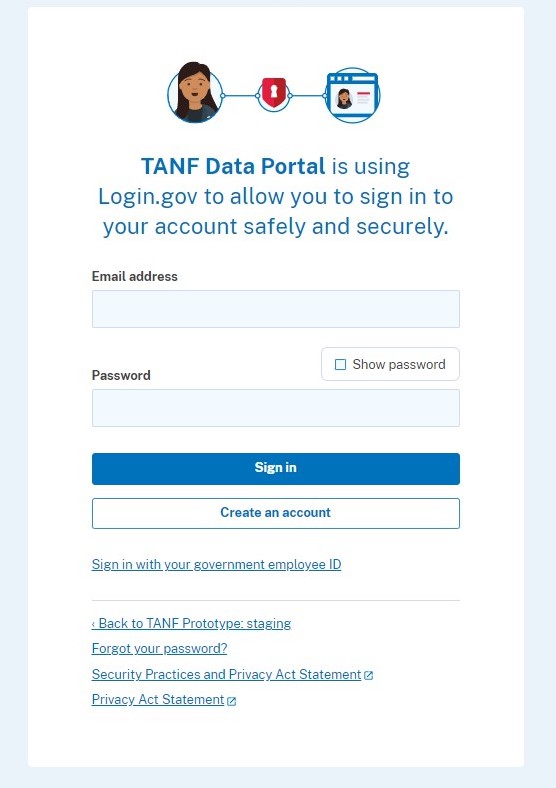

Resubmitting Complete Data Files with fTANF.exe
This guide aims to provide tips for those currently using fTANF.exe to aid in the process of transitioning from resubmitting partial data files to resubmitting complete ones.
What's changing in TDP
The new TANF Data Portal will not change reporting requirements related to which data need to be reported. However, it will require a process adjustment to how some grantees currently submit revisions of their data—specifically that revisions to data already submitted to TDP for a given quarter will need to be submitted in full (i.e. complete data) rather than as partial data only containing cases that had been added or updated.
Transmitting complete data for Sections 1 and 2 (Active and Closed Cases, respectively) is as simple as making sure that each file submitted (or resubmitted at a later date) contains all of the cases you intend to submit for the quarter. Sections 3 and 4 (Aggregate and Stratum Data, respectively) contain population counts, so transmitting complete data for those sections means ensuring that all the counts are present for each month in the quarter.
-
Sign into TANF Data Portal
Begin here: Visit TANF Data Portal and select "Sign in with LOGIN.GOV for grantees"

-
Sign-In
- Enter Email Address
- Enter Password
- Click "Sign-in"
 -
Request Access
Request access to TANF Data Portal.
- Enter First Name
- Enter Last Name
- Select your Associated State, Tribe or Territory